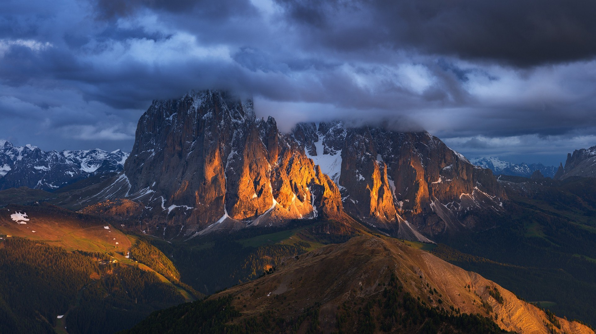

А́льпы — самый высокий и протяжённый горный хребет среди систем, целиком лежащих в Европе. При этом Кавказские горы выше, а Уральские — протяжённей, но они лежат также и на территории Азии.
Альпы представляют собой сложную систему хребтов и массивов, протянувшуюся выпуклой к северо-западу дугой от Лигурийского моря до Среднедунайской низменности. Альпы располагаются на территории 8 стран: Франции, Монако, Италии, Швейцарии, Германии, Австрии, Лихтенштейна и Словении. Общая длина альпийской дуги составляет около 1200 км (по внутреннему краю дуги около 750 км), ширина до 260 км. Самой высокой вершиной Альп является гора Монблан с высотой 4810 метров над уровнем моря, расположенная на границе Франции и Италии. Всего в Альпах сосредоточено около 100 вершин-четырёхтысячников.
